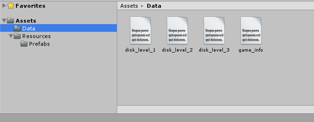
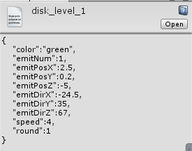
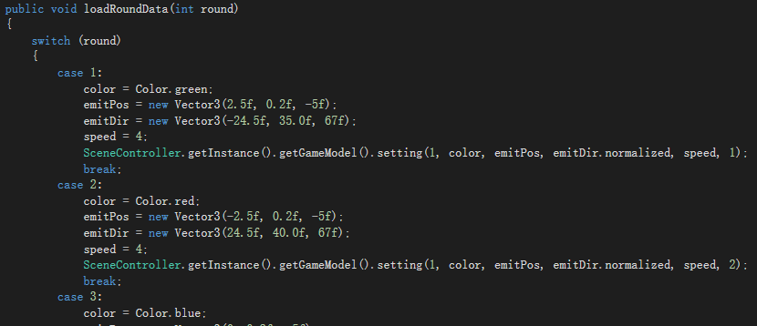
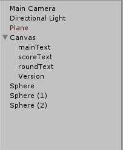
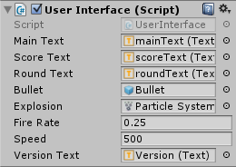

什么是序列化呢？序列化就是把一个内存对象变为与地址无关的可传输的数据格式，通常是文本格式；反序列化反之。更通俗一点说，就是把游戏运行时保存在内存中的对象或数据输出为文本，如json等；反序列化就是把这些文本重新转换为内存中对象的数据。像本次飞碟的序列化，就是把每个关卡中飞碟的颜色，大小，发射位置和方向等等数据，转换为json文件保存在根文件夹的Data目录中，每次游戏启动都会读取序列文本，将读取到的数据作为初始化飞碟的函数的参数。现在许多大型的游戏如LOL，更新周期短，每次更新时要更新代码是不可能的，他们每次更新的是资源而不是程序，生成的exe文件是不会改变的，更改的只是json之类的文本文件。在一个类前面加上[SerializeField]说明这个类是可序列化的，也就是要和文本文件打交道的。
序列化过程
首先，在Assets目录下新建Data文件夹，在Data文件夹下新建disk_level_1、disk_level_2、disk_level_3保存三个关卡的具体文本，新建game_info保存游戏版本信息，具体如下：
 
原先的飞碟版本中，游戏信息在Basecode.cs文件中，现在不需要这些内容了，删除。

更改后Basecode类为空。
在Basecode.cs中添加两个新类：
1 2 3 4 5 6 7 8 9 10 11 12 13 14 15 16 17 18 19 20 21 22 23 24 25 26
| public class GameInfo { public string version; public int totalRound; public static GameInfo CreateFromJSON(string json) { return JsonUtility.FromJson<GameInfo>(json); } } [SerializeField] public class LevelData { public string color; public int emitNum; public float emitPosX, emitPosY, emitPosZ; public float emitDirX, emitDirY, emitDirZ; public float speed; public int round; public static LevelData CreateFromJSON(string json) { return JsonUtility.FromJson<LevelData>(json); } }
|
然后，需要有一个负责文件读取的类，将json文件的信息读取进来并返回读到的 json 字符串，同样在游戏进行过程中读取游戏关卡文件，返回读到的 json 字符串。将新添加的FileManager.cs挂到主摄像机上。下面是代码：
1 2 3 4 5 6 7 8 9 10 11 12 13 14 15 16 17 18 19 20 21 22 23 24 25 26 27 28 29 30 31 32 33 34 35 36 37 38 39 40 41 42 43 44 45 46 47 48 49 50 51 52 53 54 55
| using UnityEngine; using System.Collections; using Com.Mygame; public class FileManager : MonoBehaviour { public string url; SceneController scene = SceneController.getInstance(); void Awake() { scene.setFileManager(this); LoadGameInfoJson("game_info.json"); } public void loadLevelJson(string name) { url = "file://" + Application.dataPath + "/Data/" + name; StartCoroutine(LoadLevel()); } IEnumerator LoadLevel() { if (url.Length > 0) { WWW www = new WWW(url); yield return www; if (!string.IsNullOrEmpty(www.error)) Debug.Log(www.error); else scene.stageLevel(www.text.ToString()); } } public void LoadGameInfoJson(string name) { url = "file://" + Application.dataPath + "/Data/" + name; StartCoroutine(LoadGameInfo()); } IEnumerator LoadGameInfo() { if (url.Length > 0) { WWW www = new WWW(url); yield return www; if (!string.IsNullOrEmpty(www.error)) Debug.Log(www.error); else scene.stageGameInfo(www.text.ToString()); } } }
|
由于需要将FileManager注册到场景控制器，在SceneController中添加相应注册函数
1 2 3 4 5 6
| private FileManager _fileManager; public void setFileManager(FileManager fileManager) { _fileManager = fileManager; }
|
在FileManager的场景控制器中，需要用到stageLevel函数（返回json字符串给scene）、stageGameInfo函数（返回json字符串给scene），在场景控制器中完善它。
1 2 3 4 5 6 7 8 9 10 11 12 13 14 15 16 17 18 19 20 21 22 23 24 25 26
| public void stageGameInfo(string json) { GameInfo data = GameInfo.CreateFromJSON(json); _version = data.version; _totalRound = data.totalRound; } public void stageLevel(string json) { LevelData data = LevelData.CreateFromJSON(json); Color color; if (!ColorUtility.TryParseHtmlString(data.color, out color)) { color = Color.gray; } int emitNum = data.emitNum; Vector3 emitPos = new Vector3(data.emitPosX, data.emitPosY, data.emitPosZ); Vector3 emitDir = new Vector3(data.emitDirX, data.emitDirY, data.emitDirZ); float speed = data.speed; _gameModel.setting(1, color, emitPos, emitDir.normalized, speed, emitNum); _judge.disksEachRound = emitNum; _judge.round = data.round; }
|
同时需要在SceneController中添加两个私有变量来保存版本信息以及保存总关卡数：
1 2 3
| private string _version; private int _totalRound; private FileManager _fileManager;
|
由于游戏的关卡是游戏过程中读取的，所以修改SceneController的 nextRound() 方法：
1 2 3 4 5 6 7 8 9 10
| public void nextRound() { _point = 0; if (++_round > _totalRound) { _round = 1; } string file = "disk_level_" + _round.ToString() + ".json"; _fileManager.loadLevelJson(file); }
|
接着，修改SceneController的接口方便UI的使用，如下：
1 2 3 4 5 6 7 8 9 10
| public interface IQueryStatus { bool isCounting(); bool isShooting(); int getRound(); int getPoint(); int getEmitTime(); int getTotalRound(); string getVersion(); }
|
1 2 3 4 5 6 7 8
| public int getTotalRound() { return _totalRound; } public string getVersion() { return _version; }
|
FileManager执行LoadGameInfoJson函数读取指定位置文件的内容传给场景控制器的stageGameInfo，在stageGameInfo完成json对象的序列化。在游戏关卡执行下一关的函数nextRound()的时候会执行loadLevelJson，把读到的字符串转换为实例对象，然后通过GameModel的setting方法初始化关卡设置，下一次发射就是新的关卡了。
最后，修改UserInterface.cs文件：
1 2
| public Text versionText;
|
1 2 3 4
| roundText.text = "Round: " + queryInt.getRound().ToString() + "/" + queryInt.getTotalRound().ToString(); scoreText.text = "Score: " + queryInt.getPoint().ToString(); versionText.text = "Version: " + queryInt.getVersion();
|
在游戏场景里新建一个Text命名为Version，并拖到UserInterface.cs中的versionText：
 
这样，飞碟游戏的序列化已经完成了，以后想修改游戏的关卡难度系数等等就只需要编辑json文本就好了。